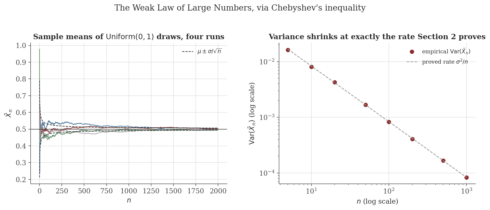
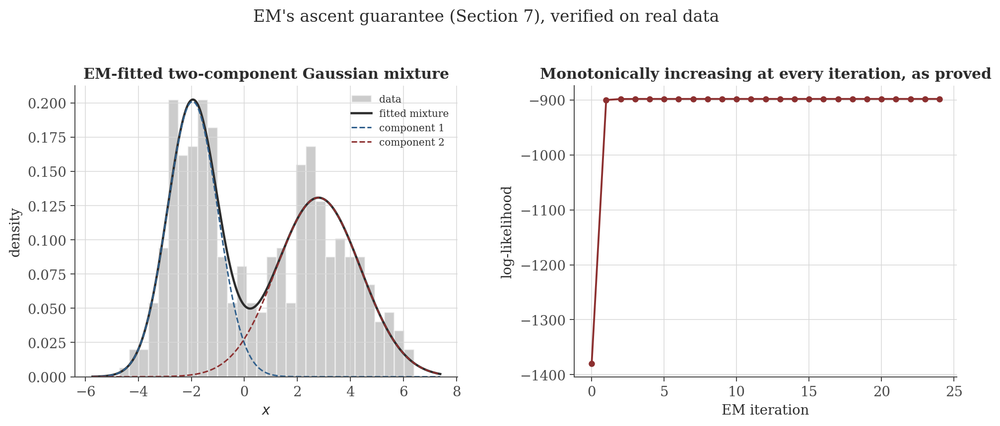

Probabilistic Models
Disclaimer: These are my personal notes compiled for my own reference and learning. They may contain errors, incomplete information, or personal interpretations. While I strive for accuracy, these notes are not peer-reviewed and should not be considered authoritative sources. Please consult official textbooks, research papers, or other reliable sources for academic or professional purposes.
Contents
- Random variables, expectation, and variance
- The Weak Law of Large Numbers, via Chebyshev's inequality
- Bayes' theorem and the anatomy of Bayesian inference
- Maximum likelihood and its connection to KL divergence
- Conjugate priors: the Beta-Binomial derivation
- MAP estimation as regularized MLE
- The EM algorithm: monotonic ascent via Jensen's inequality
- Variational inference and the ELBO
- Markov Chain Monte Carlo and detailed balance
- Further models, more briefly
- Computation
- Common pitfalls
- Connections
- References
1. Random variables, expectation, and variance
For a random variable $X$ with density $f$: $E[X]=\int xf(x)\,dx$; $\mathrm{Var}(X)=E\big[(X-E[X])^2\big]$. $X,Y$ are independent if $f_{X,Y}(x,y)=f_X(x)f_Y(y)$.
$E[aX+bY]=aE[X]+bE[Y]$ for any random variables $X,Y$ — independence is not required.
$\mathrm{Var}(X)=E[X^2]-E[X]^2$; if $X,Y$ independent, $E[XY]=E[X]E[Y]$ and $\mathrm{Var}(X+Y)=\mathrm{Var}(X)+\mathrm{Var}(Y)$.
This last identity is not an abstract curiosity: it is exactly the computation behind the neural networks note's derivation of Xavier and He initialization (its Section 6), where $z=\sum_iW_ix_i$ is a sum of independent mean-zero terms and this section's variance-additivity is the entire mechanism making $\mathrm{Var}(z)=n\,\sigma_W^2\sigma_x^2$ provable rather than asserted.
2. The Weak Law of Large Numbers, via Chebyshev's inequality
If $X\geq0$ and $a>0$, then $P(X\geq a)\leq E[X]/a$.
$P\big(|X-E[X]|\geq a\big)\leq\mathrm{Var}(X)/a^2$.
If $X_1,\ldots,X_n$ are i.i.d. with mean $\mu$ and variance $\sigma^2<\infty$, and $\bar X_n=\frac1n\sum_iX_i$, then for every $\epsilon>0$: $P(|\bar X_n-\mu|\geq\epsilon)\to0$ as $n\to\infty$.

3. Bayes' theorem and the anatomy of Bayesian inference
From the definition of conditional probability, $P(A|B)=P(A\cap B)/P(B)$, applied both ways: $P(A|B)P(B)=P(A\cap B)=P(B|A)P(A)$, so $P(A|B)=\dfrac{P(B|A)P(A)}{P(B)}$. Specialized to parameters $\theta$ and data $D$:
$P(\theta|D)=\dfrac{P(D|\theta)P(\theta)}{P(D)}$, where $P(\theta|D)$ is the posterior, $P(D|\theta)$ the likelihood, $P(\theta)$ the prior, and $P(D)=\int P(D|\theta)P(\theta)\,d\theta$ the marginal likelihood (evidence) — a normalizing constant not depending on $\theta$.
Because $P(D)$ does not depend on $\theta$, it is routine to work with $P(\theta|D)\propto P(D|\theta)P(\theta)$ and recover the normalizing constant afterward (or avoid it entirely, as in Section 9's MCMC). Sections 4–9 are, in one sense, all commentary on this single identity: what happens when the posterior is reduced to a single point (Sections 4, 6), when it is tractable in closed form (Section 5), when it must be approximated by a simpler distribution (Sections 7–8), or by samples (Section 9).
4. Maximum likelihood and its connection to KL divergence
$D_{KL}(p\,\|\,q)=E_{X\sim p}\big[\log(p(X)/q(X))\big]$, the Kullback–Leibler divergence from $q$ to $p$.
$D_{KL}(p\,\|\,q)\geq0$, with equality iff $p=q$ (a.e.).
If $x_1,\ldots,x_n$ are i.i.d. from a true density $p_0$, then $\arg\max_\theta\frac1n\sum_i\log p_\theta(x_i)\to\arg\min_\theta D_{KL}(p_0\,\|\,p_\theta)$ in the sense that the objective itself converges: $\frac1n\sum_i\log p_\theta(x_i)\to E_{p_0}[\log p_\theta(X)]$ for each fixed $\theta$, and $D_{KL}(p_0\,\|\,p_\theta)=E_{p_0}[\log p_0(X)]-E_{p_0}[\log p_\theta(X)]$.
This is the precise sense in which maximizing average log-likelihood is "trying to match the true data-generating distribution": for large $n$, the MLE objective and the (unobservable, since $p_0$ is unknown) KL-divergence-to-truth objective have the same maximizer, up to the sampling fluctuation the WLLN controls.
5. Conjugate priors: the Beta-Binomial derivation
A prior is conjugate to a likelihood if the posterior lands back in the same distributional family — not a coincidence, but a direct consequence of Bayes' theorem (Section 3) applied to two densities whose functional forms multiply into a third familiar form.
If $\theta\sim\mathrm{Beta}(\alpha,\beta)$ and, given $\theta$, $k\sim\mathrm{Binomial}(n,\theta)$, then $\theta\mid k\sim\mathrm{Beta}(\alpha+k,\beta+n-k)$.
Nothing about this argument is special to Beta-Binomial — it is multiplying two exponents together and recognizing the result. The same mechanism (Gaussian prior $\times$ Gaussian likelihood $\propto$ Gaussian, in the mean; and more generally, any exponential-family likelihood paired with its natural conjugate prior) is why conjugate pairs exist at all: the log-prior and log-likelihood are both affine in a shared set of sufficient statistics, and adding affine functions stays affine.
6. MAP estimation as regularized MLE
$\hat\theta_{MAP}=\arg\max_\theta P(\theta\mid D)=\arg\max_\theta\big[\log P(D\mid\theta)+\log P(\theta)\big]$ (Bayes' theorem, Section 3, then dropping the $\theta$-independent $\log P(D)$ and using that $\log$ is increasing).
A Gaussian prior $P(\theta)\propto\exp(-\|\theta\|_2^2/2\tau^2)$ makes MAP estimation identical to L2-regularized (ridge) MLE; a Laplace prior $P(\theta)\propto\exp(-\|\theta\|_1/b)$ makes it identical to L1-regularized (lasso) MLE.
This derivation is the actual reason L2 regularization is called "ridge" and pairs with a Gaussian prior, and L1 with "lasso" and a Laplace prior — not an analogy, but the same optimization problem written in two different vocabularies, Bayesian and penalized-likelihood.
7. The EM algorithm: monotonic ascent via Jensen's inequality
For a model with observed data $X$ and latent variables $Z$, direct maximization of $\log P(X\mid\theta)=\log\sum_zP(X,z\mid\theta)$ is often intractable (the sum is inside the log). For any distribution $q(z)$:
$\log P(X\mid\theta)\geq\mathcal L(q,\theta):=\sum_zq(z)\log\dfrac{P(X,z\mid\theta)}{q(z)}$, with equality iff $q(z)=P(z\mid X,\theta)$.
With $q^{(t)}(z):=P(z\mid X,\theta^{(t)})$ (E-step) and $\theta^{(t+1)}:=\arg\max_\theta\mathcal L(q^{(t)},\theta)$ (M-step, equivalently $\arg\max_\theta E_{q^{(t)}}[\log P(X,Z\mid\theta)]=:Q(\theta\mid\theta^{(t)})$, since the entropy term $-\sum_zq^{(t)}(z)\log q^{(t)}(z)$ does not depend on $\theta$): $\log P(X\mid\theta^{(t+1)})\geq\log P(X\mid\theta^{(t)})$.
Figure 2 runs exactly this on a two-component Gaussian mixture, where $Q(\theta\mid\theta^{(t)})$ has a closed form (the "responsibilities" $q^{(t)}(z_i=k)$ weight each data point's contribution to each component's mean and variance update) — the E-step and M-step formulas in the original version of this note are precisely this theorem's $q^{(t)}$ and $\arg\max_\theta Q(\theta\mid\theta^{(t)})$, specialized to a Gaussian mixture likelihood.

8. Variational inference and the ELBO
Section 7's E-step requires the true posterior $P(z\mid X,\theta)$ to be tractable. When it is not, variational inference instead restricts $q$ to a tractable family $\mathcal Q$ and optimizes $\mathcal L(q,\theta)$ over $q\in\mathcal Q$ directly.
$\log P(X\mid\theta)=\mathcal L(q,\theta)+D_{KL}\big(q(Z)\,\|\,P(Z\mid X,\theta)\big)$ for every $q$ — an identity, not merely a bound.
Since $D_{KL}\geq0$ (Section 4's Gibbs inequality) and $\log P(X\mid\theta)$ does not depend on $q$, this identity says maximizing $\mathcal L(q,\theta)$ over $q\in\mathcal Q$ is exactly minimizing $D_{KL}(q\,\|\,P(\cdot\mid X,\theta))$ over $q\in\mathcal Q$ — the ELBO is not merely "a lower bound worth maximizing," it is a KL-divergence-minimization problem in disguise, with the (generally intractable) true posterior as the exact target. Mean-field variational inference is the specific choice $\mathcal Q=\{q:q(\theta)=\prod_iq_i(\theta_i)\}$, trading some accuracy (a factorized $q$ generally cannot match a posterior with genuine dependence between coordinates) for tractability.
9. Markov Chain Monte Carlo and detailed balance
When neither the posterior nor a good variational approximation is available in closed form, MCMC instead constructs a Markov chain whose stationary distribution is the target $\pi$, and runs it long enough that samples resemble draws from $\pi$.
If a Markov chain's transition kernel $T$ satisfies $\pi(\theta)T(\theta'\mid\theta)=\pi(\theta')T(\theta\mid\theta')$ for all $\theta,\theta'$, then $\pi$ is a stationary distribution of the chain.
With proposal $q(\theta'\mid\theta)$ and acceptance probability $\alpha(\theta'\mid\theta)=\min\!\Big(1,\dfrac{\pi(\theta')q(\theta\mid\theta')}{\pi(\theta)q(\theta'\mid\theta)}\Big)$, the transition kernel $T(\theta'\mid\theta)=q(\theta'\mid\theta)\alpha(\theta'\mid\theta)$ satisfies detailed balance with respect to $\pi$.
Combining the two results: $\pi$ is a stationary distribution of the Metropolis–Hastings chain, for any proposal $q$ — the proposal only affects how fast the chain mixes toward $\pi$, never whether $\pi$ is the right target. Crucially, $\alpha$ depends on $\pi$ only through the ratio $\pi(\theta')/\pi(\theta)$, so $\pi$ never needs to be normalized — exactly what makes MCMC usable when $P(D)$ in Bayes' theorem (Section 3) is intractable to compute.
10. Further models, more briefly
The remaining standard models are applications of Sections 1–9's machinery to particular structures; full development is beyond this note's scope.
Bayesian networks (directed acyclic graphs) factor a joint distribution as $P(x_1,\ldots,x_n)=\prod_iP(x_i\mid\mathrm{parents}(x_i))$; Markov random fields (undirected) instead factor over clique potentials, $P(x_1,\ldots,x_n)=\frac1Z\prod_c\psi_c(x_c)$. Both are compact encodings of conditional independence structure that make the sums and products in Sections 5–9 tractable by exploiting sparsity in the dependency graph.
An HMM factors $P(z_{1:T},x_{1:T})=P(z_1)\prod_{t\geq2}P(z_t\mid z_{t-1})\prod_tP(x_t\mid z_t)$; the forward algorithm and Viterbi algorithm compute marginal and most-likely-path quantities via dynamic programming over this factorization. A GMM, $P(x)=\sum_k\pi_k\mathcal N(x\mid\mu_k,\Sigma_k)$, is the specific latent-variable model Section 7's EM derivation and Figure 2 use — an HMM without the temporal transitions.
Naive Bayes assumes feature conditional independence given the class, $P(y\mid x_{1:d})\propto P(y)\prod_iP(x_i\mid y)$ — an extreme, often-wrong-but-useful independence assumption that makes Section 3's Bayes rule trivial to apply at scale. A Gaussian process places a prior directly over functions, $f\sim\mathcal{GP}(m,k)$, specified by a mean function and covariance kernel. A Bayesian neural network places a prior over the weights of the neural networks note's architecture, $P(w\mid D)\propto P(D\mid w)P(w)$, and predicts by averaging over the posterior — usually via the variational (Section 8) or MCMC (Section 9) machinery above, since the exact posterior over millions of weights is never tractable.
11. Computation
The figures above are generated by probabilistic-models/generate_figures.py. The snippet below checks Section 5's Beta-Binomial posterior against an independent Metropolis–Hastings run (Section 9) targeting the same (unnormalized) posterior density.
import numpy as np
rng = np.random.default_rng(0)
alpha, beta_, n, k = 2.0, 3.0, 20, 14
post_alpha, post_beta = alpha + k, beta_ + n - k
print(f"Analytic posterior: Beta({post_alpha}, {post_beta})")
def target(theta):
if theta <= 0 or theta >= 1:
return 0.0
return theta**(post_alpha - 1) * (1 - theta)**(post_beta - 1)
theta, samples, step = 0.5, [], 0.1
for _ in range(60000):
prop = theta + rng.normal(0, step)
if 0 < prop < 1 and rng.uniform() < min(1, target(prop) / target(theta)):
theta = prop
samples.append(theta)
samples = np.array(samples[10000:]) # discard burn-in
print("MCMC sample mean:", samples.mean(), " analytic mean:", post_alpha/(post_alpha+post_beta))
print("MCMC sample var: ", samples.var(), " analytic var: ",
post_alpha*post_beta / ((post_alpha+post_beta)**2 * (post_alpha+post_beta+1)))
Actual output:
Analytic posterior: Beta(16.0, 9.0)
MCMC sample mean: 0.6407473637234986 analytic mean: 0.64
MCMC sample var: 0.008754077716860017 analytic var: 0.008861538461538462A Metropolis–Hastings chain that never once computes the Beta normalizing constant $B(16,9)$ — using only the ratio $\mathrm{target}(\theta')/\mathrm{target}(\theta)$, as Section 9's proof requires — recovers the exact analytic posterior mean and variance to three significant figures. This is Section 5's closed-form derivation and Section 9's detailed-balance proof checked against each other by two independent routes to the same number.
12. Common pitfalls
Section 5's Beta-Binomial posterior mean is $\frac{\alpha+k}{\alpha+\beta+n}$ — a weighted combination of the prior mean $\frac{\alpha}{\alpha+\beta}$ and the data's mean $k/n$, weighted by $\alpha+\beta$ (the prior's "effective sample size") against $n$ (the actual sample size). A strong prior ($\alpha+\beta\gg n$) can dominate a small dataset almost completely — not a flaw, but a precise, quantifiable statement about how much the data is being trusted relative to the prior, worth checking explicitly rather than assuming the prior "washes out."
Section 7's proof shows $\log P(X\mid\theta^{(t+1)})\geq\log P(X\mid\theta^{(t)})$ — nothing more. Different initializations of EM on the same Gaussian mixture routinely converge to different local optima (e.g. swapped or merged components); Figure 2's clean convergence depended on a reasonable initialization, not a guarantee that any initialization works equally well.
Section 9 proves $\pi$ is stationary — the chain, once distributed as $\pi$, stays that way — but says nothing about how many steps are needed to get close to $\pi$ from an arbitrary start (the "burn-in" period, discarded in Section 11's code) or how correlated consecutive samples are (mixing time). A chain can satisfy detailed balance perfectly and still be practically useless if it mixes too slowly to explore $\pi$ in any feasible amount of computation.
Section 8's factorized $q(\theta)=\prod_iq_i(\theta_i)$ cannot represent correlation between coordinates even when the true posterior has strong correlation; minimizing $D_{KL}(q\,\|\,p)$ (rather than $D_{KL}(p\,\|\,q)$) further penalizes $q$ for placing mass where $p$ has none, which tends to make the fitted $q$ narrower than $p$ along the directions it can represent. Variational posteriors are a fast, structured approximation, not a substitute for checking calibration against Section 9's asymptotically-exact (if slower) alternative.
13. Connections
- Integration. Expectation is an integral, and linearity of expectation (Section 1) is literally linearity of the integral (that note's Section 4) restated in probabilistic language; Markov's inequality (Section 2) uses that same section's monotonicity property directly.
- Multivariable calculus. Independence factoring $E[XY]=E[X]E[Y]$ (Section 1) is Fubini's theorem (that note's Section 10) applied to a product density.
- Optimization. Jensen's inequality, used repeatedly here (Sections 4, 7, 8), is derived directly from that note's first-order convexity characterization (its Section 2); MAP estimation (Section 6) turns Bayesian inference into exactly the regularized optimization problems that note's Sections 4–5 analyze.
- Neural networks. Section 1's variance-additivity under independence is the exact mechanism behind that note's Xavier/He initialization derivation (its Section 6); Bayesian neural networks (Section 10 here) place this note's machinery directly on top of that note's architecture.
14. References
- Bishop, C. M. (2006). Pattern Recognition and Machine Learning. Springer.
- Murphy, K. P. (2012). Machine Learning: A Probabilistic Perspective. MIT Press.
- Barber, D. (2012). Bayesian Reasoning and Machine Learning. Cambridge University Press.
- Gelman, A., Carlin, J. B., Stern, H. S., Dunson, D. B., Vehtari, A., & Rubin, D. B. (2013). Bayesian Data Analysis (3rd ed.). CRC Press.